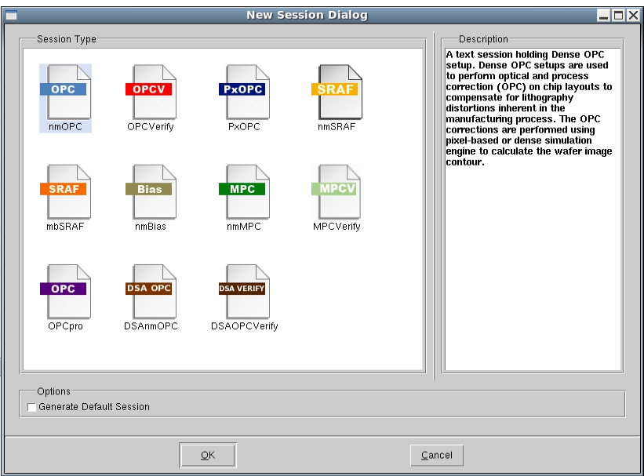

The RET Flow
Tool provides a convenient, productive method for executing a number
of GUI-based applications with Calibre nmSRAF.
Procedure
- In a shell, invoke Calibre
WORKbench from the command line:
calibrewb
As an alternative, you invoke
RFT directly from the command line by specifying the -rft option
with any previously-created flow:
calibrewb -rft myFlow
In either case, the prompt
in the shell changes to “%” and Calibre WORKbench appears. For a
complete description, refer to the Calibre WORKbench User’s Manual for all other available invocation
command line options.
- Load a design layout into
Calibre WORKbench and zoom into a small portion of the design for
subsequent OPC and SRAF generation.
- If you did not invoke RFT
directly from the command line (alternative Step 2), start RFT from
the Litho menu
in Calibre WORKbench ():
The RET Flow Tool appears.
- To add new sessions of various
applications, choose .
The New Session form appears
with all available session applications.
Figure 2. RFT Applications
Choosing any one of these applications
impacts what options are available from the menus available in RFT.
You can start from scratch by choosing a new session, but it is
faster to import existing sessions as shown in the next section.
Results
You opened a design in calibre WORKbench,
started RFT, and gained access to add new applications for the RET
Flow Tool.